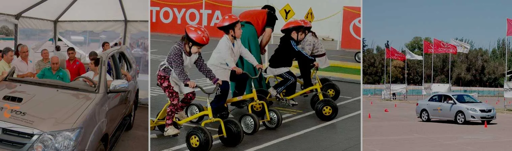

SEGURIDAD
TOYOTA siempre se ocupa de sus clientes
Nos interesa que Ud. conozca y utilice adecuadamente los elementos de seguridad que están presentes en su vehículo.
Antes de conducir su vehículo:
- Cinturones de Seguridad
- Bolsas de Aire
- Sistema Antibloqueo de Frenos (ABS)
- Uso correcto del cubrealfombras
Para obtener más información, ponemos a su disposición el Manual de Seguridad de Toyota.
Click aqui para descargar El programa de seguridad vial “Toyota y Vos” en la ciudad de Zárate.
Toyota y Vos, el programa de seguridad vial dirigido a jóvenes con registro y sus padres, estuvo presente el la ciudad de Zárate durante el fin de semana del 28 y 29 de agosto.
TOYOTA ARGENTINA, acompañada por Bridgestone realizó una nueva edición de “Toyota y Vos. Manejar seguro está en nuestras manos”, en la comunidad de Zárate. El programa está dirigido a jóvenes de entre 17 y 25 años y sus padres e incluye sesiones teóricas y prácticas a bordo de vehículos TOYOTA.
Este programa forma parte de las acciones de Responsabilidad Social de la compañía y está diseñado bajo el concepto de manejo seguro. “Toyota y vos” brinda a los participantes herramientas que contribuyen a conducir de manera responsable. Para ello, a través de sesiones teóricas y prácticas dictadas por un equipo de instructores profesionales, se los ayuda a reconocer las principales causas de accidentes e identificar y reaccionar ante situaciones reales de riesgo en el manejo.
“TOYOTA diseña y fabrica automóviles con la más alta tecnología aplicada a la seguridad de los ocupantes, pero creemos firmemente que el principal aspecto de seguridad es su conductor. Por eso, a través de ´Toyota y Vos´ los invitamos a participar de un espacio de reflexión y acercamiento entre padres e hijos en relación a nuestros hábitos de manejo. A través de este programa, procuramos dimensionar lo importante y crítico que es conocer el vehículo que manejamos, los caminos y las rutas en las que conducimos, y sobre todo la seria responsabilidad que implica ser un conductor”, señala Eduardo Kronberg, Gerente de Relaciones Públicas de TOYOTA ARGENTINA.
Características de la actividad:
Cada jornada tiene una duración de tres horas y comienza con una charla en la que instructores profesionales comparten con los jóvenes y sus padres los principales elementos que deben tenerse en cuenta para una conducción segura.
Luego, con el propósito de que reconozcan la relación crítica entre distracciones y tiempo de reacción, el programa ofrece a los jóvenes la posibilidad de realizar sesiones prácticas sobre un vehículo donde viven distintas situaciones de distracción, como la utilización del teléfono celular. También experimentan maniobras de frenado en recta y en curva, y ejercicios de slalom ante la atenta mirada y supervisión de instructores profesionales.
Mientras los jóvenes realizan las prácticas, los padres intensifican su conocimiento sobre conducción y comprenden en detalle los riesgos y las consecuencias de un choque en un simulador de impacto desarrollado por la compañía de neumáticos Bridgestone, que permite comprobar las ventajas del uso del cinturón de seguridad. La actividad concluye con una puesta en común de los conceptos abordados durante el curso, en la que padres e hijos comparten sus experiencias y realizan un acuerdo simbólico de manejo seguro a partir de su participación en el curso.
El programa, iniciado en febrero de 2008, ya recorrió las ciudades de Mendoza, Rosario, Córdoba, Pinamar, Ciudad de Buenos Aires y Concepción del Uruguay.